- Week5 连续机率分布
Week5 连续机率分布
5-1: 机率密度函数 PDF (PROBABILITY DENSITY FUNCTION)
- 离散的随机变数有 PMF 告诉我们 某个数字发生的机率
- 连续变数的机率分布常有不均等的情况发生， Ex: 睡觉的时间长度
- 对连续的随机变量，我们也想知道某个数字 发生的机会多大，可以用 PMF 吗?
- 连续Random Variable 的先天问题
- 每个数字发生的机率都是 0!
- 还是很想知道在某个数字发生的机会多大， 怎么办?
- 先看个乱七八糟的例子
- 因为拍戏，特别订做合金宝剑
- 铜、金打造，如何得知有无偷工减料?
- 整根有质量，但是每点质量都是零?好熟悉!
- 不看质量看什么?看密度!
- 密度 at x ≈ (质量 in [x,x+Δx])/Δx (Δx→0)
- 连续的东西，关键是密度!
- 宝剑有密度，机率也可有密度!
- 对随机变数 𝑿 而言，其机率密度:
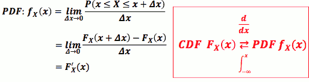
- PS:
- the value of PMF can not be greater than 1
- but the value of PDF can be greater than 1
PDF 跟机率的关系
- 因为我们习惯处理机率，看到 PDF 如何把它跟机率连结呢?
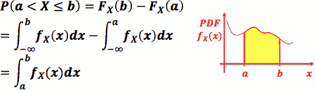
- PDF 是 CDF 的微分, CDF 是 PDF 的积分
- fₓ(x) = limΔx→0 P(x≤ X ≤x+Δx)/Δx
- 当 Δx 很小时：P(x≤ X ≤x+Δx) = fₓ(x)·Δx
- 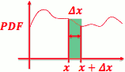
PDF 有哪些性质呢?
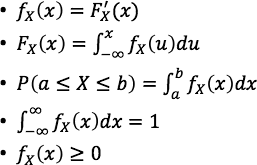
5-2: 连续机率分布 I (CONTINUOUS PROBABILITY DISTRIBUTION)
Uniform 机率分布
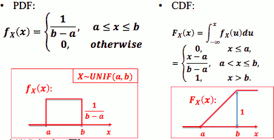
- Ex: 已知1路公交车每十分钟一班。 小美随意出发到公车站，小美须等候公交 车之时间为 X
Exponential 机率分布
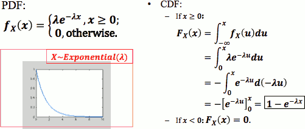
import scipy, scipy.stats
x = scipy.linspace(0,10,101)
lamda = 1
pmf = scipy.stats.expon.pdf(x, 0, 1.0/lamda) # theta = 1/lamda
cdf = scipy.stats.expon.cdf(x, 0, 1.0/lamda)
import pylab
pylab.plot(x,pmf)
pylab.plot(x,cdf,color="red")
pylab.show()
- 注意: λ = 1.0/θ , scipy.stats 参数是θ
>>> theta = 1 >>> x = 3 >>> 1/theta* math.e**( -x/theta ) 0.04978706836786395 >>> stats.expon.pdf( x , scale=theta ) 0.049787068367863944 >>> theta = 2 >>> 1/theta* math.e**( -x/theta ) 0.11156508007421492 >>> stats.expon.pdf( x , scale=theta ) 0.11156508007421491
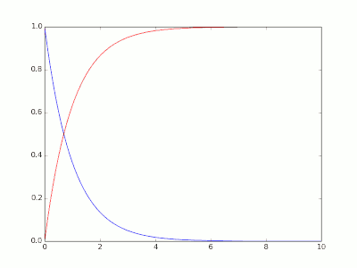
- 连续的"几何分布" ?
- 非常漂亮的CDF积分
- Exponential 分布有失忆的性质 (memoryless)，常被用来 model 有这种性质 的事情
- Ex: 小美出门化妆所需之时间
- Ex: 某宅打LOL所花的时间
- 指数函数的无记忆性来自于泊松过程k=0时的 时间指数性，而泊松过程k=0时的 时间指数性 来自于泊松分布时 lambda的恒定性，也就是离散情况下，二项分布的n*p的恒定性。
- The only memoryless continuous probability distributions are the exponential distributions,
P( X>t+s | X>t ) = P( X>s ).
P( X>t+s | X>t ) = P( X>s )
=> P( X>t+s , X>t ) / P(X>t) = P( X>s )
=> P( X>t+s ) / P(X>t) = P( X>s )
let G(t) = P(X>t)
=> G(t+s) = G(t)G(s)
=> G(a) = G(1)ª
G(a) = G(1)ª = elog(G(1))·a
指数分布和 柏松分布之间的关系
- 定理一：设随机变量 X 服从参数为 λT的柏松分布，则 两次发生之间的“等待时间”Y 服从参数为 λ的指数分布。
- 泊松分布
- 泊松分布的参数λ是单位时间(或单位面积)内随机事件的平均发生率
- 泊松分布适合于描述单位时间(或空间)内随机事件发生的次数
- 参数λ 由二项分布的期望np决定，λ=np，表示该时间(空间)段内的事件发生的频率。
- eg. 一本书里，印刷错误的字的个数
- 泊松分布 表示一般情况下，书内(空间)的出错的频率(期望)，n代表所有的字数，p代表印刷错误的概率，k表示印刷错的字数。
- 当n很大，p很小的时候，二项分布的极限是泊松分布。
- 这个例子同样可以用二项分布的角度来解释：每印刷一个字，表示一次伯努利实验（n代表所有的字数，p代表印刷错误的概率，k表示印刷错的字数
- 当n继续变大，为连续变量的时候，二项分布的极限又成了正态分布（正态分布是所有分布趋于极限大样本的分布）。
- 指数分布
- 指数分布是泊松过程的事件间隔的分布
- 泊松分布表示的是事件发生的次数，“次数”这个是离散变量，所以泊松分布是离散随机变量的分布；
- 指数分布是两件事情发生的平均间隔时间，“时间”是连续变量，所以指数分布是一种连续随机变量的分布。
- 指数分布λ 的含义就是泊松分布中的λ
- Q: 柯仔在學校的中午都會去跑操場，但是他用意並不是訓練強健的體魄，而是要撿拾別人遺落在跑道邊的金錢。假設柯仔經過長期的經驗與訓練，不管在任何天氣或是體力的影響下，都可以保持一定的速度 1 m/s(公尺每秒)，而在這個速度之下，柯仔平均跑 300 m(公尺) 可以發現一次遺落的錢。隨機變數X代表柯仔開始跑步到撿到錢為止所跑的距離，已知X是個 Exponential Distribution。
- 請問柯仔跑超過5分鐘才撿到錢的機率是多少?
- A: 柏松分布 单位时间(300s) λ = 1 ，
- 5分钟内 捡到钱的概率 P(x≤1) = F( 1 ) = 1 - e⁻¹
- 5分钟后 捡到钱的概率 P(x>1 ) = 1 - F(1) = e⁻¹ = 0.37
>>> 1.0 - scipy.stats.expon.cdf(1,0,1) 0.36787944117144233
- Q: 承續上题柯仔的撿錢故事，請問柯仔跑10分鐘操場內撿不到錢的機率是多少?
>>> 1 - stats.expon.cdf( 2,0,1 ) 0.1353352832366127 - Q: 再承續柯仔的撿錢傳說，某天，柯仔預計只要跑10分鐘操場，但是柯仔在跑5分鐘操場內已經確定沒撿到錢，這時柯仔思量著當天撿不到錢的機率如果大於等於四成，他就要回教室睡覺了。
- 請幫忙柯仔計算在已知柯仔跑五分鐘操場內撿不到錢的前提下，今天跑總共10分鐘操場撿不到錢的機率是多少?
- P( X>x+x₀ | X>x₀ ) = P( X>x+x₀, X>x₀ ) / P(X>x₀) )
>>> ( 1 - stats.expon.cdf( 2,0,1 ) ) / ( 1 - stats.expon.cdf( 1,0,1 ) ) 0.36787944117144233 - 和 超過5分鐘才撿到錢的機率 相同！！！ 这就是 指数分布的 失记性！！！
指数分布和 几何分布之间的关系
- 都是失忆性分布
- 期望值都是 倒数 形式
- 服从指数分布的随机变量，可以表示 某些易碎品的 寿命， 如电子元件，玻璃制品。 虽然它们的寿命与多种因素有关，但是有一种因素是决定性的。它正好与 “服从正态分布是与 多种相互独立的因素有关，但是没有一种因素是起决定作用” 相反。
- 几何分布 是一种 “直到 。。。为止” 型概率分布，也是一种 “寿命”。
- 相互独立的设计，直到击中为止，射击次数服从几何分布。被枪手离散地射击，直到击中，它的寿命 就 "为止"了
指数分布和 uniform 分布的关系
- 定理2: 随机变量Y 服从参数为 λ 的指数分布的充要条件是 随机变量 Y = 1-e-λx 服从(0,1) 上的均匀分布。
指数分布和 正态分布的关系
- 定理3: 随机变量 X,Y 相互独立，都服从正态分布N(0,λ²) , 则 Z=X²+Y² 服从指数分布。
Erlang 机率分布
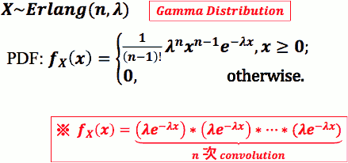
- CDF:
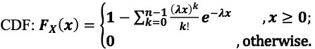
import scipy, scipy.stats
x = scipy.linspace(0,10,101)
lamda = 1
pmf = scipy.stats.erlang.pdf(x, 3, 0, 1.0/lamda) # theta = 1/lambda
cdf = scipy.stats.erlang.cdf(x, 3, 0, 1.0/lamda)
import pylab
pylab.plot(x,pmf)
pylab.plot(x,cdf,color="red")
pylab.show()
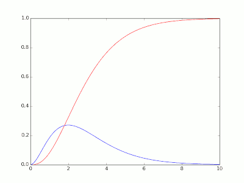
Erlang 和 Exponential 关系
- Erlang(n,λ) 常被用来model 一件有多个关卡事情的总时间，而每个关卡所 需时间都是随机的
- 关卡数: n
- 每关卡所需时间之机率分布: Exponential( λ )
- Ex: 打电动过三关所需时间: Erlang(3, λ)
- Ex: 写完五科作业所需时间
6-1: 连续机率分布 II ( CONTINUOUS PROBABILITY DISTRIBUTIONS )
From part of Week6
Normal 机率分布(常态分布)
- 常态分布在自然界很常出现
- Ex: 人口身高分布、体重分布
- 亦常被用作「很多随机量的总合」的机率模型
- Ex: 100 人吃饭时间的总合
- 原因:来自最后会讲到的「中央极限定理」
- 常态分布，亦常被称作Gaussian (高斯) 机率分布
- X ~ Gaussian ( μ,σ )
- 也常有人用 X ~ N( μ,σ² ) 表示
- 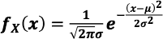
- 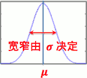
- CDF是多少?
- 很难算，积分根本算不出来!
- 用数值积分法去建表?
- 很难啊，因为不同的 μ,σ 就会造就 出不同的 常态分布 PDF，每个都要建一个表会要命啊!
- 怎么办?
- 有没有办法找到一组特别 μ,σ ，先针对这组的 CDF 建表， 然后想办法把别的常态分布的 CDF 跟这组 CDF 牵上关系?
- 若能牵扯上，再利用这表去算出别的常态分布的 CDF 值?
Standard Normal Distribution 标准常态分布
- Z ~ N( 0,1 )
- 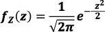
- 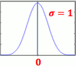
- CDF 表示为Φ(z) :
- 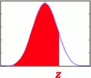
- 积不出来，只能以数值方法近似出来后建表 给人家查
- 网络上或是工程计算器上常能找到
- Φ(z) 的性质：
- Φ(-z)= 1 - Φ(z)
- 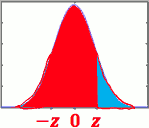
- 任意 μ,σ 下的 CDF ？
- 任意 μ,σ 下的 CDF , 我们要把它跟 N(0,1) 牵上关系
- 「关系!」: 对任何 X ~ N( μ,σ² ) 而言， (X-μ)/σ ~ N(0,1)
- 证明：略
- 对任何 X ~ N( μ,σ² ) 而言 , FX(x) = Φ( (x-μ)/σ ) .
- 证明：
Fₓ(x) = P( X≤x )
= P( X-μ ≤ x-μ )
= P( (X-μ)/σ ≤ (x-μ)/σ )
= Φ( (x-μ)/σ )
Ex. 已知 10 名水源阿伯每日拖车总重量总和 X ~ N(500, 100²) (kg) , 问本日总重量少于700 之机率为 ？
- FX(700) = P( X≤700 ) = P( (X-μ)/σ ≤ (700-500)/100 ) = Φ(2) = 0.977
>>> scipy.stats.norm.cdf( 700, 500,100 ) 0.97724986805182079
- FX(700) = P( X≤700 ) = P( (X-μ)/σ ≤ (700-500)/100 ) = Φ(2) = 0.977
Draw PDF
import matplotlib.pyplot as plt
import numpy as np
import scipy.stats as stats
mu = 20
sigma = 2
x = np.linspace( mu - 5*sigma, mu + 5*sigma, 200 )
plt.plot( x, stats.norm.pdf( x, mu, sigma ) )
plt.show()
The 68-95-99.7 rule
- 68% of values fall within 1 standard deviations of the mean
- 95% of values fall within 2 standard deviations of the mean
- 99.7% of values fall within 3 standard deviations of the mean